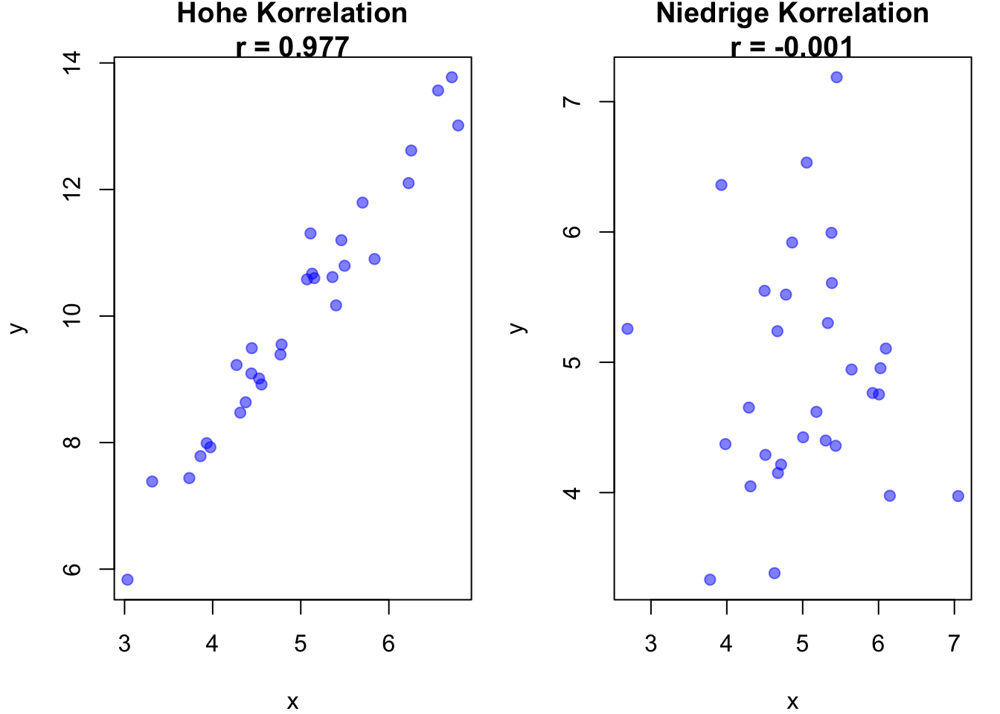
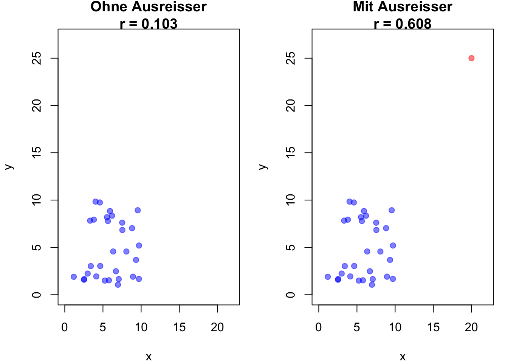

Wo \(X_i ^d\) die Abweichung von \(X_i\) vom Mittelwert \(\mu_x\) der Variable \(X\) ist und \(Y_i ^d\) die Abweichung von \(Y_i\) vom Mittelwert \(\mu_y\) der Variable \(Y\) ist.
Problem: Die Summe der Produkte der Abweichungen ist abhängig von der Stichprobengrösse \(N\).
Division durch Stichprobengrösse Kovarianz zwischen \(X\) und \(Y\)
In R lässt sich der Pearson-Korrelationskoeffizient mit der Funktion cor() berechnen. So lassen sich schnell und einfach Korrelationen zwischen zwei Variablen berechnen.
a <-c(1, 2, 3, 4, 5)b <-c(2, 3, 4, 5, 6)cor(a, b)
[1] 1
Code
# Set seed for reproducibilityset.seed(123)# Hohe Korrelation (r nahe bei 1)x_high <-rnorm(30, mean =5, sd =1)y_high <-2* x_high +rnorm(30, mean =0, sd =0.5)r_high <-cor(x_high, y_high)# Niedrige Korrelation (r nahe bei 0)x_low <-rnorm(30, mean =5, sd =1)y_low <-rnorm(30, mean =5, sd =1)r_low <-cor(x_low, y_low)# Plots nebeneinanderpar(mfrow =c(1, 2), mar =c(4, 4, 2, 1))# Plot mit hoher Korrelationplot(x_high, y_high, main =paste("Hohe Korrelation\nr =", round(r_high, 3)), xlab ="x", ylab ="y", pch =19, col =rgb(0, 0, 1, 0.5))# Plot mit niedriger Korrelationplot(x_low, y_low, main =paste("Niedrige Korrelation\nr =", round(r_low, 3)), xlab ="x", ylab ="y", pch =19, col =rgb(0, 0, 1, 0.5))

Beispiele für Pearson-Korrelationen
Wenn wir unseren Datensatz um einer Ausreisser ergänzen sehen wir schnell, dass der Pearson-Korrelationskoeffizient sehr stark beeinflusst wird.
Code
# Berechnung des Pearson-Korrelationskoeffizienten# Daten ohne Ausreißer generierenx <-runif(30, 1, 10)y <-runif(30, 1, 10)# Korrelationskoeffizient ohne Ausreißerr_no_outlier <-cor(x, y)# Daten mit Ausreißer hinzufügenx_outlier <-c(x, 20)y_outlier <-c(y, 25)# Pearson-Korrelationskoeffizient mit Ausreißerr_with_outlier <-cor(x_outlier, y_outlier)# Plots nebeneinanderpar(mfrow =c(1, 2), mar =c(4, 4, 2, 1))# Plot ohne Ausreißerplot(x, y, main =paste("Ohne Ausreißer\nr =", round(r_no_outlier, 3)), xlab ="x", ylab ="y", pch =19, col =rgb(0, 0, 1, 0.5), xlim =c(0, 22), ylim =c(0, 27))# Plot mit Ausreißerplot(x_outlier, y_outlier, main =paste("Mit Ausreißer\nr =", round(r_with_outlier, 3)), xlab ="x", ylab ="y", pch =19, col =c(rep(rgb(0, 0, 1, 0.5), 30), rgb(1, 0, 0, 0.5)), xlim =c(0, 22), ylim =c(0, 27))

Einfluss von Ausreissern auf den Pearson-Korrelationskoeffizienten
9.2 Der Spearman-Rangkorrelationskoeffizient
Für ordinal skalierte Daten kann der Rang eines Objekts in zwei Variablen verwendet werden:
\(r_i\) ist der Rang der \(i\)-ten Beobachtung in der ersten Variable.
Vereinfachte Formel, wenn jeder Rang nur einmal vorkommt
Der Spearman-Rangkorrelationskoeffizient wird sehr oft acuh für metrische Daten verwendet, da er robust gegenüber Ausreissern ist. Im Zweifel sollte man den Spearman-Rangkorrelationskoeffizienten verwenden.